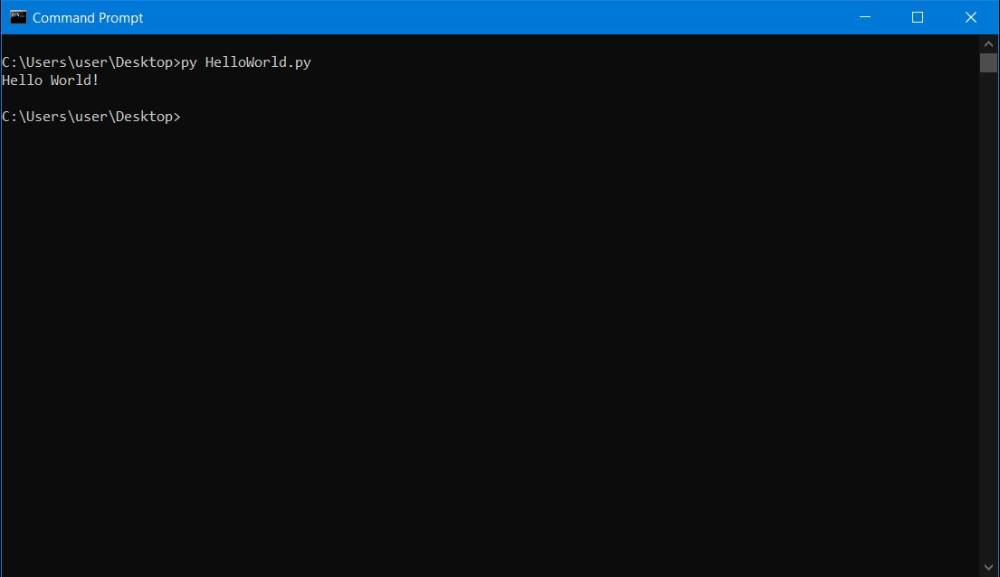

Python is an easy to learn, powerful programming language. It has efficient high-level data structures and a simple but effective approach to object-oriented programming. Python’s elegant syntax and dynamic typing, together with its interpreted nature, make it an ideal language for scripting and rapid application development in many areas on most platforms.The Python interpreter is easily extended with new functions and data types implemented in C or C++ (or other languages callable from C). Python is also suitable as an extension language for customizable applications.This tutorial does not attempt to be comprehensive and cover every single feature, or even every commonly used feature. Instead, it introduces many of Python’s most noteworthy features, and will give you a good idea of the language’s flavor and style.
Python is easy to use, powerful, and versatile, making it a great choice for beginners and experts alike. Python’s readability makes it a great first programming language — it allows you to think like a programmer and not waste time with confusing syntax. For instance, look at the following code to print “hello world” in C# and Python.
C#
using System;
using System.Collections.Generic;
using System.Linq;
using System.Text;
namespace HelloWorld {
class Program {
static void Main(string[] args) {
Console.WriteLine("Hello World!");
}
}
}
Python
print("Hello World")
Ease of installation is one of the python's perks. If you're on a Mac or a Linux, Python comes pre-installed, so just open up the terminal and just type python and press enter.
Even on windows it is easy to install. Instead of focusing on how to even run your code, you'll be able to focus on learning actual prgramming.
Every big company uses Python. The famous Dropbox is written entirely in Python. Most companies use a mixture of different languages. For example, a few of the languages Google uses are C++, Python and now Go among them. Early at Google, there was an engineering decision to use "Python where we can, C++ where we must."
Python comes pre-installed on Mac and most Linux distributions. However, if you use Windows you will have to manually install it, but don't fear. It is nothing complicated.
First, go to Python's official web page. Next, got to downloads section and you'll see a download button for the latest python version. Download and open the executable. Follow instructions and after it's done everything will be ready for you.
To make sure Python installed correctly open the terminal or cmd for windows and type py --version. You should see the installed python version. And now you're ready to write your own programs.
Lets write a simple program. A programmers first code, a program that prints "Hello World!".
To start writing code, firstly, open up your favourite text editor(even a simple notepad.exe will do). To output messages to screen we use the print() function. After, you open an editor just write print("Hello World!"). Save the document with .py extension.
Next open the terminal, navigate to the folder where you saved the file. and just write python fileName.py and see your program in action.
Here is the executed program.
Indentation refers to spacing before lines of code. While most languages use curly braces ({ and }) for defining blocks of code, Python uses spaces. For Example, take a look at simple if...else statement in C# and Python.
C#
using System;
using System.Collections.Generic;
using System.Linq;
using System.Text;
namespace HelloWorld {
class Program {
static void Main(string[] args) {
if (statement == true) {
Console.WriteLine("message if true");
} else {
Console.WriteLine("message if false");
}
}
}
}
Python
if (statement == true):
print("message if true")
else:
print("message if false")
Here you can see that C# uses curly braces to define block of code. Meanwhile, in Python we use spaces.
While in other programming languages indentation in code is for readability only, the indentation in python is neccessary and you should pay always pay attention, number of spaces is up to a programmer but it should be at least one(lines don't have to have same number of spaces). Same block of code must have same number of spaces.
Python
This code wont work, because the second line has 4 spaces and the third one has 3.
if (5 > 3):
print("Five is greater than three")
print("Five is greater than three")
This code has the correct indentation.
if (5 > 3):
print("Five is greater than three")
print("Five is greater than three")
If you fail to correctly write indentations, the program will generate IndentationError.
Comments can be used to make your code more readable, to explain your code and sometimes prevent execution of certain lines when testing the code.
In Python comments start with #. Comments will not be executed and thats why it can be a great help when testing the code.
Since the print("hello world") is commented, only print("hello friend") will be exectued.
#print("hello world")
print("hello friend")
Variables are containers used to store data.
Unlike other programming lanugages Python has no keyword for delcaring variables (JavaScript has var or let keyword). You don't have to specify a data type when declaring variables in Python.
x = 5; y = 10; str = "fifteen" print(x + y,"is " + str);
Prints out 10 + 5 is fifteen to the console.
There are certain rules when naming a variable.
You can also assign values to multiple variables at once.
x, y, z = 1, 2, 3; print(x + y + z)
outputs 6
It's also possible to assign same value to multiple variables at once.
x = y = z = "These variable have the same value"
Variables can store data of different types, and different types can do different things.
Python has the following built-in data types.
| Text Types: | str |
|---|---|
| Numeric Types: | int float complex |
| Sequence Types: | list tuple range |
| Mapping Types: | dict |
| Set Types: | set frozenset |
| Boolean Types: | bool |
| Binary Types: | bytes bytearray memoryview |
You can get the type with type() function.
| Example | Data Type |
|---|---|
| x = "Hello World" | str |
| x = 20 | int |
| x = 20.5 | float |
| x = 1j | complex |
| x = ["apple", "banana", "cherry"] | list |
| x = ("apple", "banana", "cherry") | tuple |
| x = range(6) | range |
| x = {"name" : "John", "age" : 36} | dict |
| x = {"apple", "banana", "cherry"} | set |
| x = frozenset({"apple", "banana", "cherry"}) | frozenset |
| x = True | bool |
| x = b"Hello" | bytes |
| x = bytearray(5) | bytearray |
| x = memoryview(bytes(5)) | memoryview |
Python supports the usual logical conditions from mathematics:
An "if statement" is written by using the if keyword.
x = 5
y = 6
if (x < y):
print("x is lower than y")
Prints out x is lower than y
The code inside the if statement only executes if the condition inside parentheses is true.
an elif statement is Python's way of saying "If previous conditions weren't true, then try this condition.
x = 5
y = 6
if (x > y):
print("x is bigger than y")
elif (x < y):
print("y is bigger than x")
Prints out y is bigger than x since the first condition isn't true.
Finally, the code inside else statement executes if all conditions inside if and/or elif statements evaluate to false.
x = 5
y = 8
if (x > y):
print("x is bigger than y")
else:
print("x is lower than y")
Prints out x is lower than y
There is also shorthand if...else statement also called
Ternary Operators
print("5 is greater than 3") if 5 > 3 else print("5 is not greater than 3")
Just like every other programming languages, Python has a set of logical operators.
and the and operator evaluates to true if both statements are true. For Example: 5 > 3 and 3 > 1 evaluates to true.or the or operator evaluates to true if at least one statement is true. For Example: 5 > 3 or 3 < 1 evaluates to true.not operator inverts the statement. For Example: not true evaluates to false and not false evaluates to true.Loops repeat block of code if the given statement is true.
Python has two primitive loop commands:
while Loopsfor LoopsA while loops executes a block of code if the statement is true.
i = 0
while (i < 5):
print(i)
i++
This code will print numbers from 0 to 4. REMEMBER to increment i or the loop will run forever and crash the program.
while requires relevant variables to be rady, in this case we've defined i, an indexing variable, which was set to 0.
A for loop is used for iterating over a sequence (that is either a list, a tuple, a dictionary, a set, or a string.)
This is less like the for keyword in other programming languages, and works more like an iterator method as found in other object-orientated programming languages.
With the for loop we can execute a set of statements, once for each item in a list, tuple, set etc.
fruits = ["apple", "peach", "banana"]
for i in fruits:
print(i)
Prints out items of fruits list.
The break statement is used in loops to stop the loop prematurely.
fruits = ["apple", "peach", "banana"]
for i in fruits:
if (i == "peach")
break
print(i)
The loop above will only print apple and it will break after it.
The continue statement skips a single iteration.
fruits = ["apple", "peach", "banana"]
for i in fruits:
if (i == "peach"):
continue
print(i)
This loop will skip over peach.
A function is a block of code which only runs when it is called.
You can pass data, known as parameters, into a function.
A function can return data as a result.
Creating a function
In Pyhton to declare a function you must begin with def keyword.
def myFunc():
print("this is a function")
myFunc() #this line calls the function
After calling the function the code inside the body of the function will be executed.
Arguments
Information can be passed into functions as arguments.
Arguments are specified after the function name, inside the parentheses. You can add as many arguments as you want, just separate them with a comma.
The following example has a function with one argument (fname). When the function is called, we pass along a first name, which is used inside the function to print the full name:
def myFunc(fname, flast): #you can add multiple parameters to a function print("Hello " + fname) myFunc("david") #if you provide less or more arguments than a function requires it will generate an error
Prints out Hello david
Arbitrary Arguments, *args
If you do not know how many arguments that will be passed into your function, add a * before the parameter name in the function definition.
This way the function will receive a tuple of arguments, and can access the items accordingly:
def myFunc(*kids):
print("The youngest child is " + kids[1])
myFunc("Emil", "Tobias", "dato")
Prints out The youngest child is Tobias
Variables have scope, meaning it is only available in the region they are created.
Local Scope
A variable created inside a function belongs to the local scope of that fucntion, and can only be used inside that function.
def myFunc():
x = 300
print(x)
myFunc()
The variable x will be only available in the myFunc's body.
Variables created in the main body of Python are called Global variables and are available everywhere.
Global variable can also be defined inside a function with global keyword.
def myFunc():
global x
x = 300
myFunc()
print(x)
Now the variable x is available everywhere.
The global keyword is also used when we want to make changes to a global variable inside a funciton body.
To see more detailed version of Python reference, check out This Link.